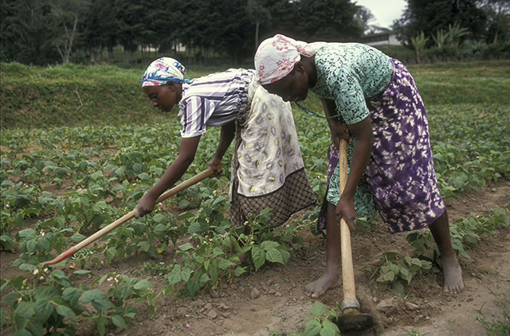
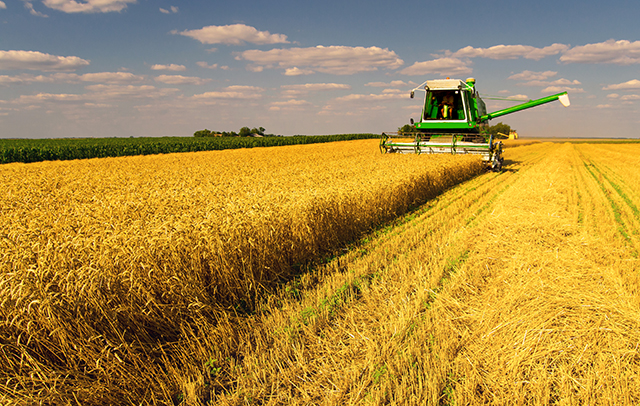
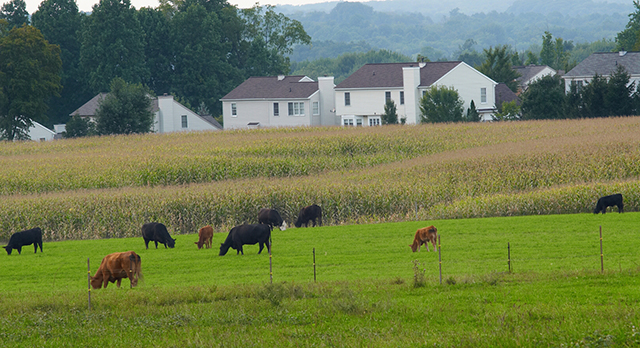
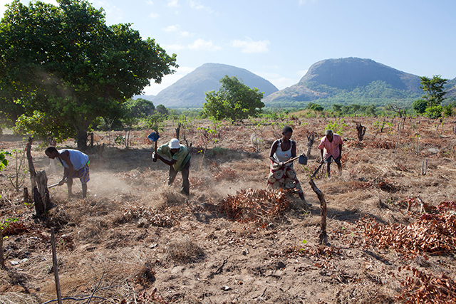
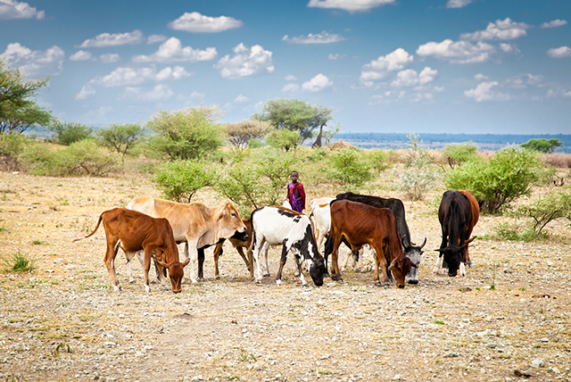
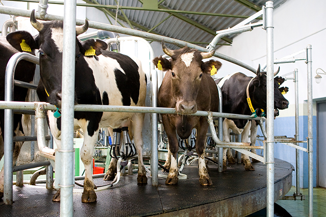
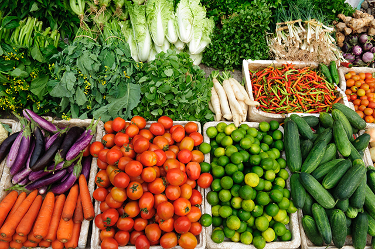

The type of farming used depends on the geographic location, level of technology, type of labour and the market (demand for produce).
| Types of farming | Description | |
|---|---|---|
| Subsistence farming | Subsistence agriculture is self-sufficiency farming in which the farmers focus on growing enough food to feed themselves and their families. They farm enough crops and animals to feed and clothe themselves during the year. |  |
| Commercial – grain dominant | Commercial grain farming occurs when a farm is set up for the sole purpose of producing crops (especially grains) for sale, with the intention of making a profit. |  |
| Commercial – mixed crops, dairy and livestock | Mixed commercial farming is the production of crops, farm animals and dairy products for sale. |  |
| Shifting and marginal cultivation | Shifting and marginal cultivation is a traditional farming system in which a tract of land is cultivated until its fertility diminishes. Then it is abandoned until its fertility is restored naturally. |  |
| Nomadic herding | Nomadic farming is when a farmer or herder moves from one place to another to find better pasturage. |  |
| Livestock rearing | Livestock such as cattle, sheep, pigs, goat etc. are raised in an agricultural setting to produce food and animal products (milk). |  |
| Specialised crops | Specialised agriculture is when you specialise in a certain type of crop such as organic farming (vegetables). |  |